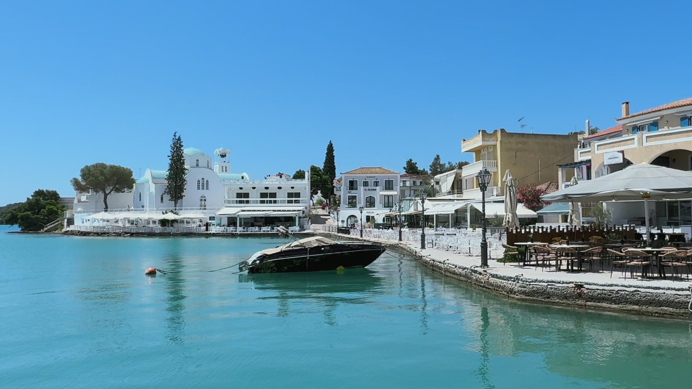
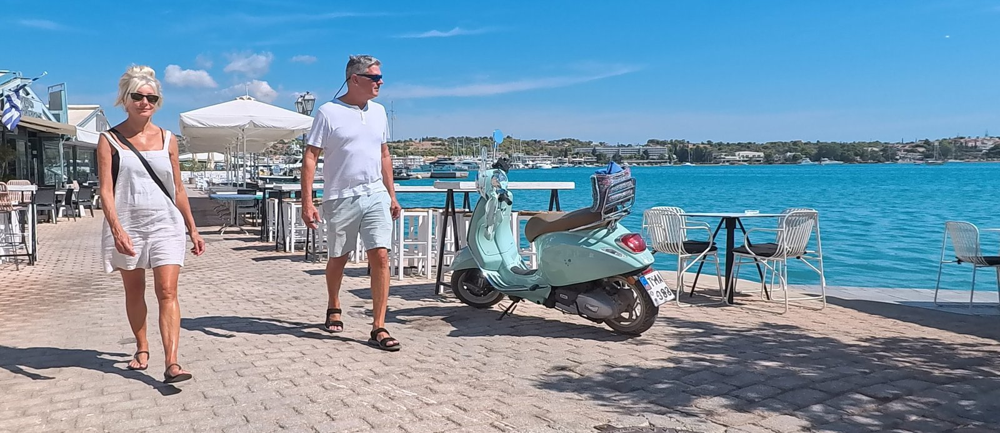
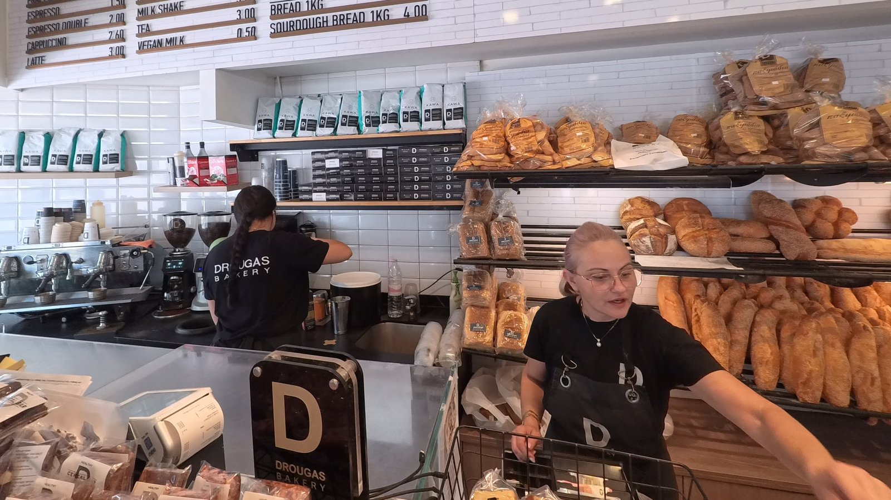
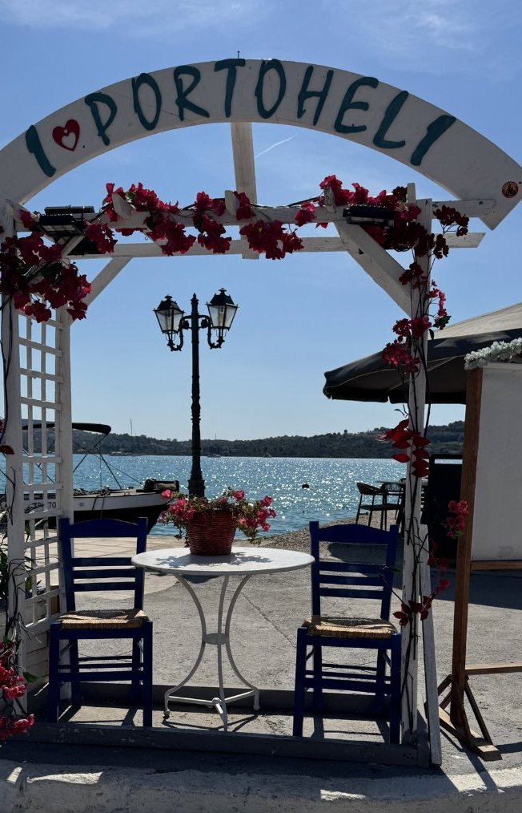
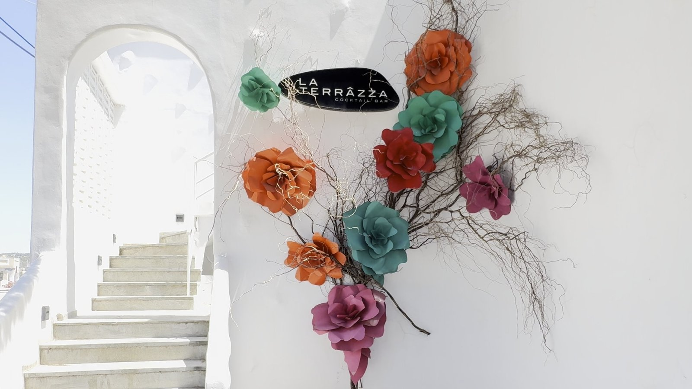
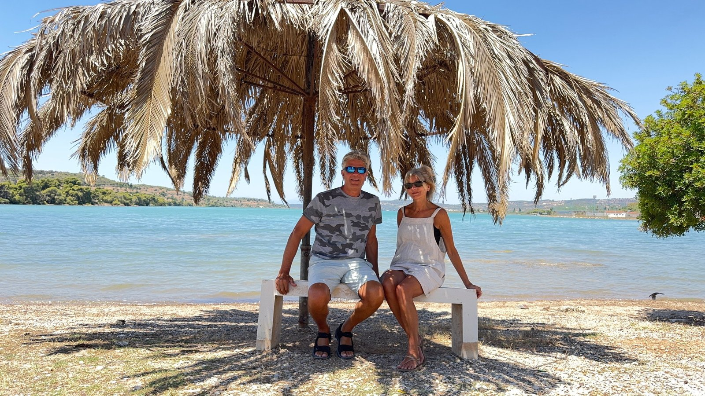

There are some places you stumble across on a road trip that make you think, perhaps we should have stayed a little longer. Porto Cheli was one of those places.
Sitting on the eastern coast of the Peloponnese, this attractive seaside resort has earned itself the nickname of the Greek Riviera, and it's not difficult to see why. Think sparkling blue water, expensive-looking boats, waterfront restaurants and the occasional superyacht that probably costs more than our house.
We called in while staying in nearby Ermioni, and although we didn't spend the night, we found plenty to like about this rather charming corner of Greece.
WHAT IS PORTO CHELI LIKE?
Porto Cheli, sometimes spelt Porto Heli, is located in the Argolis region of the Peloponnese, overlooking a beautiful sheltered bay on the Argolic Gulf. What was once a small fishing village has developed into one of Greece's more sophisticated summer destinations.

It's a rather different proposition from some of the traditional fishing villages we've explored elsewhere in the Peloponnese. Here, you'll find luxury villas, smart hotels, waterfront restaurants and a marina filled with boats belonging to people who clearly haven't been shopping in Lidl for their summer holiday.
But despite its reputation for luxury, Porto Cheli still has plenty of natural beauty. The coastline is dotted with little coves, beaches and sheltered swimming spots, while the surrounding hills provide a lovely backdrop to the bay.
It's also particularly well positioned for exploring this part of Greece. The historic town of Nafplio is around 40 kilometres away, while the nearby island of Spetses is just a short boat ride across the water.
OUR VISIT TO PORTO CHELI – COFFEE, PIES AND SUPERYACHTS
We visited Porto Cheli while based in Ermioni, and it made a lovely little excursion. Sometimes the best way to discover somewhere is simply to wander around without too much of a plan, and that's pretty much what we did.

Drougas Bakery
Our first stop was Drougas Bakery, which turned out to be a particularly good discovery. We treated ourselves to iced coffee and iced chocolate, both of which were among the best we'd had on our travels. Naturally, we couldn't possibly have a drink without something to accompany it, so we opted for a Greek classic: spinach and feta pie.

Now, if there's one thing we've learnt travelling around Greece, it's that bakeries are dangerous places. You pop in for a coffee and somehow emerge having eaten your body weight in pastry.
But when the food is this good, who's complaining?
Watching the superyachts
After our bakery stop, we found ourselves a seat overlooking the harbour. This is where Porto Cheli really comes into its own. There's something rather entertaining about sitting with a coffee and watching the luxury superyachts manoeuvre into their berths.
You can spend quite a while watching the comings and goings, taking a sneaky peek into the world of yachting life. There's a constant stream of activity, with boats arriving, departing and generally making our little hire car look rather insignificant.

La Terrazza
If you fancy taking in the harbour from a different perspective, make your way to La Terrazza Bar. This is another spot we wouldn't want you to miss. It offers panoramic views across the harbour and is a lovely place to settle down with a cocktail while watching the boats.

The restaurant serves Italian and Mediterranean dishes, including some wonderful seafood, so it's worth considering if you're looking for somewhere to enjoy a longer lunch or evening meal.
We didn't stay overnight in Porto Cheli, but having visited from Ermioni, we came away thinking it was definitely somewhere worth including on a Peloponnese road trip.
BEST THINGS TO SEE AND DO IN PORTO CHELI
Although we mainly enjoyed the harbour and waterfront during our visit, there's plenty more to explore around Porto Cheli.
1. Explore Porto Cheli Harbour
Start with the waterfront. Enjoy a coffee, watch the yachts and wander around the marina. It's the perfect place to soak up the atmosphere and enjoy a little people-watching.
2. Visit Hinitsa Beach
If you're looking for somewhere to cool off, Hinitsa Beach is a lovely option. Its sheltered setting, golden sand and clear water make it ideal for swimming and relaxing.
3. Discover Limanakia's Little Coves
For something a little quieter, head towards Limanakia, where you'll find small rocky coves and beautiful clear water. It's a good choice for swimming and snorkelling away from the busier beaches.
4. Spend Time at Ververonda Beach

Ververonda offers another attractive stretch of coastline, with deep blue water and a more upmarket holiday atmosphere. It's particularly popular with visitors drawn to the area's boating and luxury accommodation.
5. Take a Trip to Spetses
One of Porto Cheli's biggest advantages is its proximity to Spetses. From nearby Kosta, regular boats make the crossing in around 10 minutes. It's an easy opportunity to swap the mainland for an island day out, explore the pretty harbour and enjoy the island's distinctive character.
You can also explore Kosta Beach, close to the ferry departure point, or seek out the quieter pebbly shores of Kovas Beach.
PRACTICAL TIPS FOR VISITING PORTO CHELI
- Getting there: Porto Cheli is approximately 208 kilometres from Athens, with the drive taking around 2.5–3 hours depending on traffic and your route. If you're exploring the Peloponnese by hire car, it's an easy addition to an eastern Argolis itinerary.
- Getting around: A car is useful for discovering the surrounding beaches and coves, although the harbour area is pleasant to explore on foot. Read our car hire tips before you book.
- Where to stay: Porto Cheli has a selection of hotels, luxury villas and holiday accommodation. It's particularly popular during the summer months, so booking ahead is sensible.
- Best time to visit: Late spring and early autumn are lovely times to explore, with warm weather and potentially fewer visitors than during the peak summer season.
- Island trips: Head to Kosta for boat connections to Spetses. Check local ferry timetables before travelling, particularly outside the main summer season.
- Shopping: The harbour has boutique shops and souvenir stores, while nearby Kranidi offers a more traditional selection of local shops and markets.
OUR VERDICT – IS PORTO CHELI WORTH VISITING?
Absolutely. Porto Cheli might not have the traditional fishing village feel that we often gravitate towards, but it has a charm of its own. The beautiful harbour, impressive yachts, lovely waterfront restaurants and easy access to Spetses make it well worth a visit.
We particularly enjoyed our little bakery stop and watching the boats come and go. And La Terrazza is definitely one to put on your list if you fancy a cocktail with a view.
Would we stay here? Possibly, if we fancied a little more sophistication on our next Greek adventure. But for us, it's the sort of place that makes a perfect day out from Ermioni.
If you're exploring the eastern Peloponnese, don't just drive past. Stop for a coffee, find yourself a harbour-side seat and enjoy a little taste of the Greek Riviera. Just don't start looking too closely at the superyachts.
You might come home with expensive ideas!